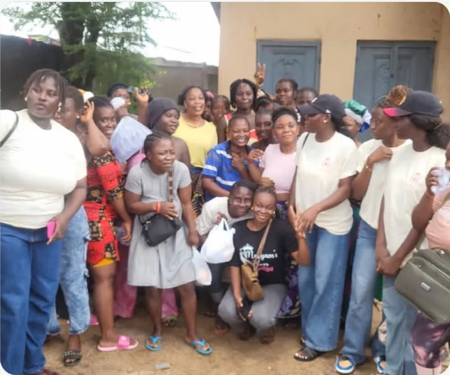

Menstrual & Feminine Health
Education and awareness that support girls and women in understanding and caring for their health.
Empowering Young People. Strengthening Communities.
Supporting young people, especially girls and women, through health education, empowerment, entrepreneurship, safer communities, mental wellness and environmental awareness.

OUR WORK
Mariamways focuses on wellbeing, confidence, opportunity and healthier communities.
Education and awareness that support girls and women in understanding and caring for their health.
Knowledge, confidence and opportunities that help women and young people grow.
Encouraging supportive, respectful and safer environments for young people and women.
Promoting practical skills, initiative and pathways toward economic independence.
Supporting awareness, healthy thinking, emotional wellbeing and self-confidence.
Helping young people and communities understand their role in healthier surroundings.
OUR APPROACH
Our work connects personal wellbeing, confidence and opportunity with stronger, healthier communities.
Supporting menstrual and feminine health, health education and the knowledge young people need to care for their wellbeing.
Building confidence, supporting mental wellness and helping young people develop skills, independence and opportunity.
Encouraging safer, supportive communities where people participate, care for their environment and help one another grow.
BRING MARIAMWAYS TO YOUR COMMUNITY
Schools, organisations and communities can request an outreach session around one of Mariamways’ focus areas.
Request Outreach